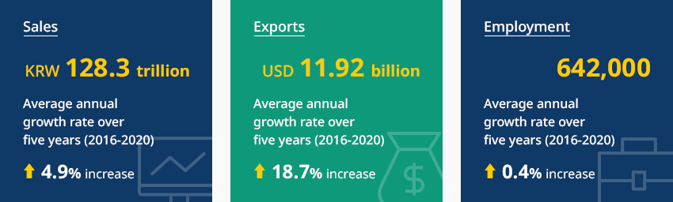
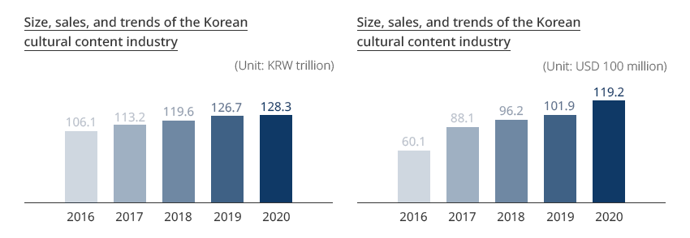
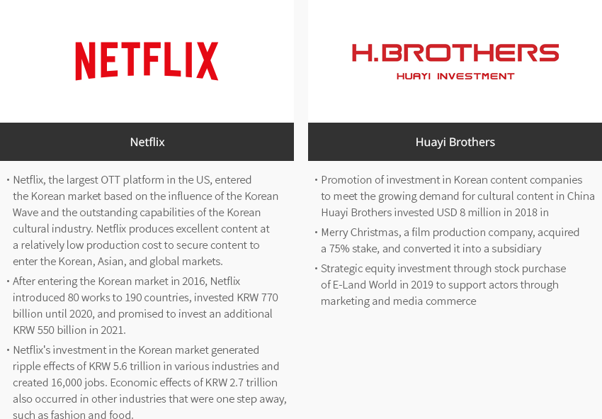
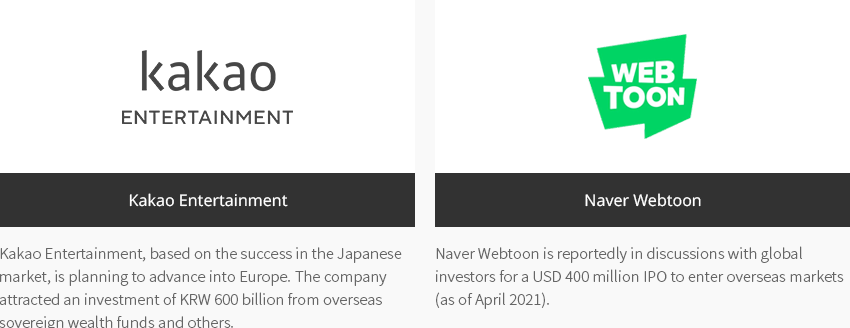
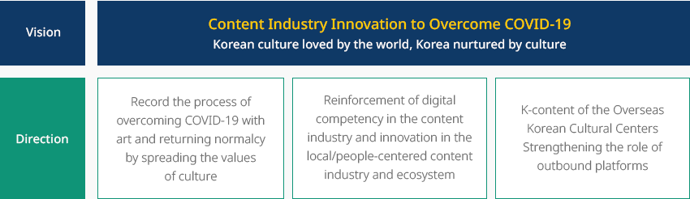
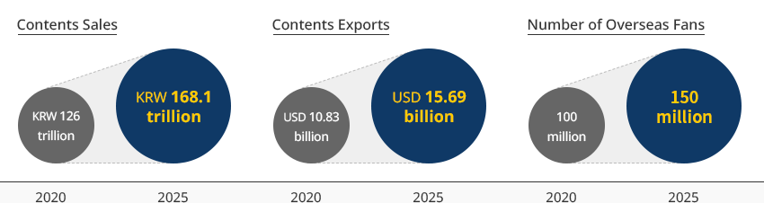
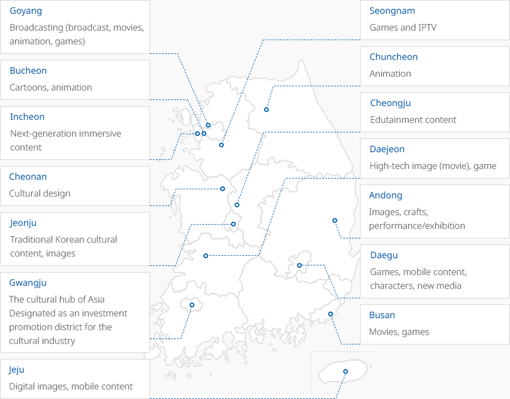

Cultural Content
- Home
- Why KOREA
- Industry
- Cultural Content
Cultural Content
-
Korean Wave, The Power of Korea’s Cultural Content Industry CloseKorean Wave, The Power of Korea’s Cultural Content IndustryThe cultural content industry aims to industrially realize a dream society (Jensen, 2005) based on the interaction between technology and human beings. Facing the 4th industrial revolution and metaverse era, the influence of Korea's cultural content enjoyed by people around the world is growing.The size of the Korean cultural content market is set to reach USD 70.9 billion (estimation for 2023), which is the 7th largest in the world. The Korean Wave has maintained a positive reputation in the global market over the past 20 years."Korea's Cultural Content Recognized in the Global Market"Netflix's <Squid Game> - <Squid Game>, a series released on Netflix in 2021, took first place in all countries. It garnered a sensational popularity and created considerable ripple effects, as people around the world imitated the characters and games.BTS' agency HYBE - <Butter>, released in 2021 by BTS, who have steadily maintained the status of global stars since 2018, has been ranked no. 1 on the Billboard HOT 100 for ten weeks. <Permission to Dance> and <My Universe> topped the Billboard HOT 100, proving that BTS is approaching the mainstream in the global cultural content market.
 "Size of the Global Cultural Content Market"(Unit : USD 100 million)
"Size of the Global Cultural Content Market"(Unit : USD 100 million)Size of the Global Cultural Content Market Rank, Country, Year(2020~2025), Average annual growth rate (%) Rank Country 2020p 2021 2022 2023 2024 2025 Average annual growth rate (%) 1 US 8,446 8,925 9,519 9,885 10,230 10,543 4.54 2 China 3,449 3,699 3,939 4,153 4,339 4,505 5.49 3 Japan 1,943 2,034 2,109 2,156 2,201 2,243 2.91 4 Germany 999 1,058 1,128 1,169 1,206 1,237 4.36 5 UK 971 1,058 1,136 1,197 1,250 1,305 6.10 6 France 680 728 782 816 849 878 5.25 - 7
- Korea
- 598
- 641
- 679
- 709
- 735
- 759
- 4.87
8 Canada 544 574 610 636 660 681 4.62 9 Italy 382 417 454 472 488 500 5.54 10 India 352 401 448 494 540 586 10.75 ※ Source: KOCCA (2022). 2021 Overseas Content Market Analysis -
Korea’s Cultural Content Industry Trends OpenKorea’s Cultural Content Industry TrendsAs of 2020, the sales of the Korean cultural content industry reached KRW 128.3 trillion, exports were USD 11.92 billion, and employment stood at 642,000 people. The average annual growth rate over the previous five years was 4.9% in sales, 18.7% in exports, and 0.4% in employment, showing a steady increase. By industry, sales are highest in the broadcasting (KRW 22.0 trillion) and publishing industries (KRW 21.6 trillion). The export amount of the gaming industry reached USD 8.19 billion, accounting for 68.7% of cultural content industry exports.
※ Source: Ministry of Culture, Sports and Tourism (2022). 2021 Content Industry Statistics (as of 2020)"Status of Korean Cultural Content Industry"
Status of Korean Cultural Content Industry Category, Number of Companies, Number of Employees, Sales(KRW million), Value-added (KRW million), Value-added Rate (%), Exports (USD 1,000), Imports (USD 1,000), Trade Balance (USD 1,000) Category Number of Companies Number of Employees Sales
(KRW million)Value-added
(KRW million)Value-added Rate
(%)Exports
(USD 1,000)Imports
(USD 1,000)Trade Balance
(USD 1,000)Publishing 25,244 185,444 21,648,849 8,758,970 40.5 345,960 254,371 91,589 Cartoon 6,144 11,230 1,534,444 562,733 36.7 62,715 6,493 56,222 Music 33,138 65,464 6,064,748 1,982,931 32.7 679,633 12,146 667,487 Movies 916 10,497 2,987,075 1,015,512 34.0 54,157 28,330 25,827 Gaming 11,541 83,303 18,885,484 8,320,944 44.1 8,193,562 270,794 7,922,768 Animation 490 5,472 553,290 232,909 42.1 134,532 7,791 126,741 Broadcasting 1,070 50,239 21,964,722 7,699,900 35.1 692,790 60,969 631,822 Advertisement 6,337 68,888 17,421,750 5,874,614 33.7 119,935 98,672 21,263 Characters 2,700 36,505 12,218,076 4,863,779 39.8 715,816 158,420 557,396 Knowledge and Information 9,949 93,182 19,373,367 8,686,346 44.8 691,987 9,467 682,520 Content Solutions 2,022 31,863 5,635,230 2,546,517 45.2 233,196 13,369 219,827 Total 99,551 642,086 128,287,034 50,545,154 39.4 11,924,284 920,822 11,003,462 ※ Source: Ministry of Culture, Sports and Tourism (2022). 2021 Content Industry Statistics (as of 2020)Size, sales, and trends of the Korean cultural content industry / (Unit: KRW trillion)- 2016 - 106.1
- 2017 - 113.2
- 2018 - 119.6
- 2019 - 126.7
- 2020 - 128.3
Size, sales, and trends of the Korean cultural content industry / (Unit: USD 100 million)- 2016 - 60.1
- 2017 - 88.1
- 2018 - 96.2
- 2019 - 101.9
- 2020 - 119.2
※ Source: Ministry of Culture, Sports and Tourism (2022). 2021 Content Industry Statistics (as of 2020) -
Active Content Creation by Global Companies in Korea OpenActive Content Creation by Global Companies in KoreaForeign direct investment is made in relatively big businesses, such as publishing, film, broadcasting, gaming, and entertainment. Netflix and Huayi Brothers are some examples.
-
Netflix
- Netflix, the largest OTT platform in the US, entered the Korean market based on the influence of the Korean Wave and the outstanding capabilities of the Korean cultural industry. Netflix produces excellent content at a relatively low production cost to secure content to enter the Korean, Asian, and global markets.
- After entering the Korean market in 2016, Netflix introduced 80 works to 190 countries, invested KRW 770 billion until 2020, and promised to invest an additional KRW 550 billion in 2021.
- Netflix's investment in the Korean market generated ripple effects of KRW 5.6 trillion in various industries and created 16,000 jobs. Economic effects of KRW 2.7 trillion also occurred in other industries that were one step away, such as fashion and food.
-
Huayi Brothers
- Promotion of investment in Korean content companies to meet the growing demand for cultural content in China
- Huayi Brothers invested USD 8 million in 2018 in Merry Christmas, a film production company, acquired a 75% stake, and converted it into a subsidiary
- Strategic equity investment through stock purchase of E-Land World in 2019 to support actors through marketing and media commerce
-
Netflix
-
Webtoon Companies Enter Overseas Market and Maintain Investment OpenWebtoon Companies Enter Overseas Market and Maintain Investment
- Kakao Entertainment - Kakao Entertainment, based on the success in the Japanese market, is planning to advance into Europe. The company attracted an investment of KRW 600 billion from overseas sovereign wealth funds and others.
- Naver Webtoon - Naver Webtoon is reportedly in discussions with global investors for a USD 400 million IPO to enter overseas markets (as of April 2021)
-
Digital Competency Enhancement and Ecosystem Innovation In the Cultural Content Industry to Overcome COVID-19 OpenDigital Competency Enhancement and Ecosystem Innovation In the Cultural Content Industry to Overcome COVID-19The 7th Content Industry Promotion Committee meeting was held in November 2021, presided by the prime minister, as an opportunity to overcome COVID-19. In the meeting, the content industry’s strategies to overcome COVID-19 were announced for strengthening digital competency and innovating the ecosystem.Vision - Content Industry Innovation to Overcome COVID-19 Korean culture loved by the world, Korea nurtured by cultureDirection
- Record the process of overcoming COVID-19 with art and returning normalcy by spreading the values of culture
- Reinforcement of digital competency in the content industry and innovation in the local/people-centered content industry and ecosystem
- K-content of the Overseas Korean Cultural Centers Strengthening the role of outbound platforms
"Content Industry Innovation Strategy to Overcome COVID-19"- Contents Sales: KRW 126 trillion(2020) > KRW 168.1 trillion(2025)
- Contents Exports : USD 10.83 billion(2020) > USD 15.69 billion(2025)
- Number of Overseas Fans: 100 million(2020) > 150 million(2025)
-
Culture Industry Clusters OpenCulture Industry ClustersAlthough the importance of location is relatively low due to the nature of the industry based on creativity and imagination, more than 90% of cultural content companies are located in the metropolitan area, including Seoul.
- In October 2021, a plan to create CJ LIVE CITY, an exclusive concert hall for K-POP, in Goyang was announced, with a goal of opening in 2024.
- In November 2021, a plan to open the Lee Kun-hee Collection, encompassing national treasures and modern and contemporary art, at the site of Songhyeon-dong, Jongno-gu, Seoul was announced, with a goal of opening in 2027. Synergic effects are expected with the adjacent National Museum of Modern and Contemporary Art and Seoul Museum of Craft Art.
In accordance with the government's policy to strengthen local cultural industries, the government is leading to create clusters, such as cultural industrial complexes, cultural industry promotion districts, and cultural industry promotion facilities. Its aim is to create synergic effects by attracting more cultural content companies and clustering related industries.
According to the Framework Act on the Promotion of Cultural Industries, companies located in the clusters will receive various benefits, such as payment exemptions, licensing benefits, and tax credits, which helps to form advantageous clusters by genre."Cultural Content Industry Policy Goals for 2022"- Chuncheon: Animation
- Bucheon: Cartoons, animation
- Goyang: Broadcasting (broadcast, movies, animation, games)
- Incheon: Next-generation immersive content
- Seongnam: Games and IPTV
- Cheonan: Cultural design
- Cheongju: Edutainment content
- Daejeon: High-tech image (movie), game
- Andong: Images, crafts, performance/exhibition
- Jeonju: Traditional Korean cultural content, images
- Daegu: Games, mobile content, characters, new media
- Gwangju: The cultural hub of Asia Designated as an investment promotion district for the cultural industry
- Busan: Movies, games
- Jeju: Digital images, mobile content
※ Data cooperation: Korea Culture and Tourism InstituteCultural Content Industry Policy Goals for 2022 Category, Concept, Benefits, Designation Category Concept Benefits Designation Cultural industrial complexes Industrial complex (site, buildings, facilities) designated and developed according to the Industrial Sites and Development Act, where companies, universities, research institutes, and individuals can jointly work on R&D, skill training, information sharing, and co-production - Exemption of various charges (5 types, including alternative forest resource creation cost, and farmland conservation charge)
- Various licenses and permits (34 types, including public sewerage construction, river and road construction and occupancy)
- Tax credits (exemption from acquisition taxes, registration taxes, 50% property tax exemption)
- Cheongju (March 2002)
- Chuncheon (January 2008)
Cultural industry promotion districts Districts designated to encourage business activities, R&D, training, and co-production of companies, universities, and research institutes clustered in the districts - Exemption of various charges (4 types, including alternative forest resource creation cost)
- Various licenses and permits (9 types, including public sewerage construction, river and road construction and occupancy)
- Busan, Daegu, Daejeon, Bucheon, Jeonju, Cheonan, Jeju (February 2008)
- Incheon, Goyang (December 2008)
Cultural industry promotion facilities Supportive facilities for those involved in the culture industry by attracting relevant facilities - Exemption of various charges (7 types, including development levy, overcrowding levy)
- Tax credits (exemption from acquisition taxes, registration taxes, 50% property tax exemption)
- Sangam-dong in Seoul, Cultural Content Center (March 2007)


Invest KOREA
Recommendation on Locations
Industrial complex information
[Incheon Metropolitan City Yeonsu-gu] Songdo Knowledge and Information
Industrial Complex(Incheon Free Economic Zone)
Click [Go to Detailed Information] to go to the relevant information screen of
Smart K-Factory service of Industrial Complex Corporation.
-
Complex nameSongdo Knowledge and Information Industrial Complex(Incheon Free Economic Zone)
-
Initial designation date2000.09.18
-
Designated area(m2)2,401,745
-
ManagementIncheon Free Economic Zone Authority
-
Nearby RailwayBupyeong Station
-
Distance from station(km)18
-
Nearby AirportIncheon Airport
-
Distance from airport(km)31
-
Industrial water Supply capacity(ton/day)-
-
Affiliation local governmentIncheon Metropolitan City Yeonsu-gu
-
Population2,943,491
Industrial complex information
[Gangwon-do Chuncheon City] Chuncheon Urban High-tech Cultural Industrial
Complex
Click [Go to Detailed Information] to go to the relevant information screen of
Smart K-Factory service of Industrial Complex Corporation.
-
Complex nameChuncheon Urban High-tech Cultural Industrial Complex
-
Initial designation date2008.01.25
-
Designated area(m2)186,922
-
ManagementGangwon-do Chuncheon City
-
Nearby RailwayJipyeong Station
-
Distance from station(km)60
-
Nearby AirportWonju Airport
-
Distance from airport(km)78
-
Industrial water Supply capacity(ton/day)-
-
Affiliation local governmentGangwon-do Chuncheon City
-
Population281,854
Industrial complex information
[Gangwon-do Chuncheon City] Chuncheon Power IT Cultural Complex General
Industrial Complex
Click [Go to Detailed Information] to go to the relevant information screen of
Smart K-Factory service of Industrial Complex Corporation.
-
Complex nameChuncheon Power IT Cultural Complex General Industrial Complex
-
Initial designation date2009.06.05
-
Designated area(m2)353,659
-
ManagementGangwon-do Chuncheon City
-
Nearby RailwayYangpyeong Station
-
Distance from station(km)49
-
Nearby AirportWonju Airport
-
Distance from airport(km)65
-
Industrial water Supply capacity(ton/day)1,706(㎥/day)
-
Affiliation local governmentGangwon-do Chuncheon City
-
Population281,854
Industrial complex information
[Chungcheongbuk-do Cheongju City] Cheongju Urban High-tech Cultural
Industrial Complex
Click [Go to Detailed Information] to go to the relevant information screen of
Smart K-Factory service of Industrial Complex Corporation.
-
Complex nameCheongju Urban High-tech Cultural Industrial Complex
-
Initial designation date2002.03.25
-
Designated area(m2)47,900
-
ManagementChungcheongbuk-do Cheongju City
-
Nearby RailwayOgeunjang Station
-
Distance from station(km)6
-
Nearby AirportCheongju International Airport
-
Distance from airport(km)9
-
Industrial water Supply capacity(ton/day)-
-
Affiliation local governmentChungcheongbuk-do Cheongju City
-
Population843,782
Industrial complex information
[Gyeonggi-do Paju City] Paju Publishing Culture Information National
Industrial Complex
Click [Go to Detailed Information] to go to the relevant information screen of
Smart K-Factory service of Industrial Complex Corporation.
-
Complex namePaju Publishing Culture Information National Industrial Complex
-
Initial designation date1997.03.26
-
Designated area(m2)1,561,939
-
ManagementKorea Industrial Complex Corporation
-
Nearby RailwayPaju Station
-
Distance from station(km)17
-
Nearby AirportGimpo International Airport
-
Distance from airport(km)29
-
Industrial water Supply capacity(ton/day)2176(㎥/day)
-
Affiliation local governmentGyeonggi-do Paju City
-
Population459,158
Industrial complex information
[Gwangju Metropolitan City Nam-gu] Songam General Industrial Complex
Click [Go to Detailed Information] to go to the relevant information screen of
Smart K-Factory service of Industrial Complex Corporation.
-
Complex nameSongam General Industrial Complex
-
Initial designation date1979.07.04
-
Designated area(m2)415,946
-
ManagementGwangju City (Songam Industrial Complex Council)
-
Nearby RailwayGwangju Station
-
Distance from station(km)14
-
Nearby AirportGwangju Airport
-
Distance from airport(km)9
-
Industrial water Supply capacity(ton/day)6000000(㎥/day)
-
Affiliation local governmentGwangju Metropolitan City Nam-gu
-
Population1,454,154